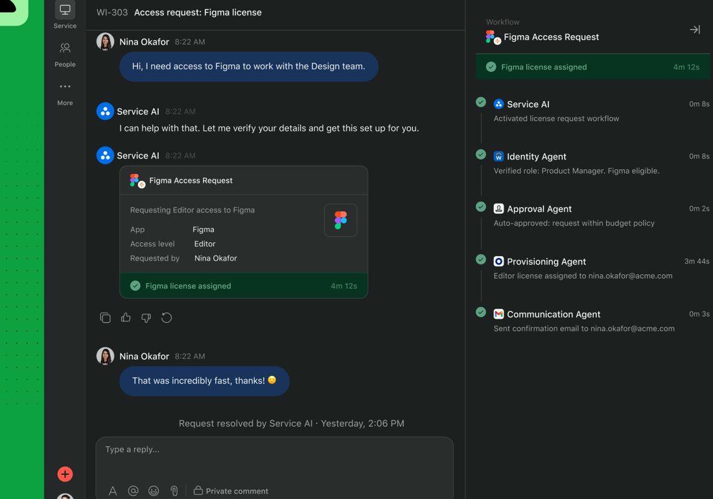
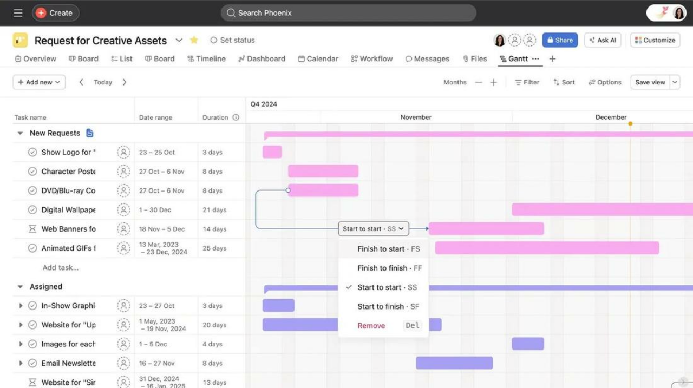
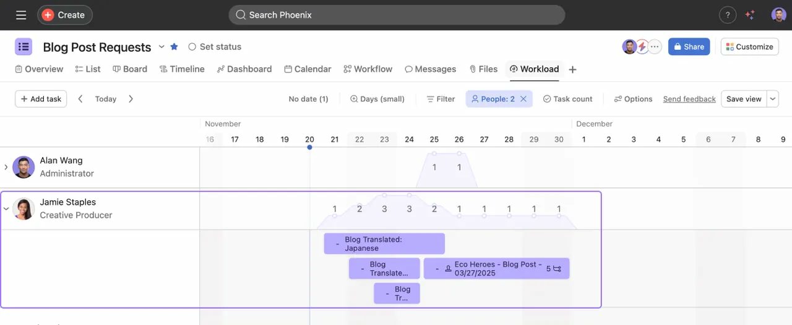

Asana Review: Solid, Structured, and Priced for the Team Upstairs
6.8 We Used It Score, out of 10
Ratings by business type
Best suited to: structured teams, marketing and product teams, operations, and mid sized companies that need portfolios and workload more than they need charm.

We Used It HQ: Streamlining business, whatever your size
The short answer
Asana is the sensible shoes of project management. It is comparable to monday.com in class, a touch less delightful in the UX/UI, more structured in how it thinks, and at its best when a whole team needs one shared picture of who owes what by when. Solos and very small teams get poor value from it, because its signature strengths, portfolios, goals and workload, are team features sold on the expensive tier, and its seats are billed in steps whether you fill them or not.
What it is
Asana is task centric and hierarchical: portfolios hold projects, projects hold sections and tasks, tasks hold subtasks. Where Monday is a board you shape, Asana is a structure you join. That difference explains both its fans, who like the order, and its detractors, who find it more text heavy and less visual than Monday.
Where it wins
- Structure that survives contact with a real team. Projects, sections and dependencies are modeled properly, so a plan built in Asana stays legible as it grows
- A proper Gantt view as well as the Timeline, from the Starter tier, with dependencies that can shift dates in a controlled way
- The Advanced tier's management layer: portfolios that roll projects up, goals, and workload views. For a manager watching several projects at once, this is the good stuff, and it is genuinely useful for showing executives the state of play
- Clean once learned. The consensus counterpoint to the first impression point is fair: after the model clicks, Asana feels uncluttered, with less visual noise than Monday

Where it frustrates
- The first impression. You have to understand Asana's hierarchy before you are productive, roughly 45 minutes in one independent test against Monday's 15, and the UX/UI never quite catches Monday for instant legibility. G2 ease of use scores agree on the direction: Monday 9.1, Asana 8.6
- The Gantt is good but costly. The capable scheduling sits up the tiers: critical path only appears on Advanced at $24.99 per user per month, and even there, subtasks are excluded from the critical path calculation, which a waterfall project manager will notice immediately
- Seat tier billing. Asana sells seats in steps (2, 3, 4, 5, then jumps of 5), so a six person team pays for ten seats. It is Monday's seat problem wearing a different hat
- The free Personal plan is a taster: no timeline, no dependencies, no automations
The AI, and its price tag
Asana's AI covers status drafting, summaries and its AI Studio for building smart workflows on the higher tiers. On the lower tiers it is tightly rationed: our pricing research found AI limited to a handful of requests per user per month on Starter and Advanced, with extra requests metered. Treat the AI as a higher tier feature, and apply our duplication warning to the writing and summarizing parts if you already pay for a general AI subscription.
Reporting and dashboards
Reporting is one of Asana's better stories at team level: dashboards per project, and on Advanced the portfolio roll ups and workload charts that turn ten projects into one page an executive can absorb. The catch is the same as everywhere in Asana: the good reporting lives on the tier that costs $24.99 a seat.

Pricing
Checked November 2026. Personal free (very limited, two users), Starter $10.99 per user per month billed annually ($13.49 monthly), Advanced $24.99 ($30.49 monthly), Enterprise by quote. Remember the seat steps when you model a team: round your headcount up to Asana's steps, not yours.
Try it:
Visit AsanaVerdict
Not the best of this bunch, but solid, and across the 2026 rankings we checked it is never last either: it sits in a tight band around 4.4 to 4.5 out of 5, and tops at least one list for structured team work. Pick it when the team is the point. Solo, your money works harder elsewhere.
Try it: Visit Asana
Research note: Pricing, seat tiers and Gantt behavior checked against vendor pages and published comparisons, November 2026. Usage history is the author's own.
Watch: the official video
“How to get started with Asana in 15 minutes or less”, from the official Asana YouTube channel.